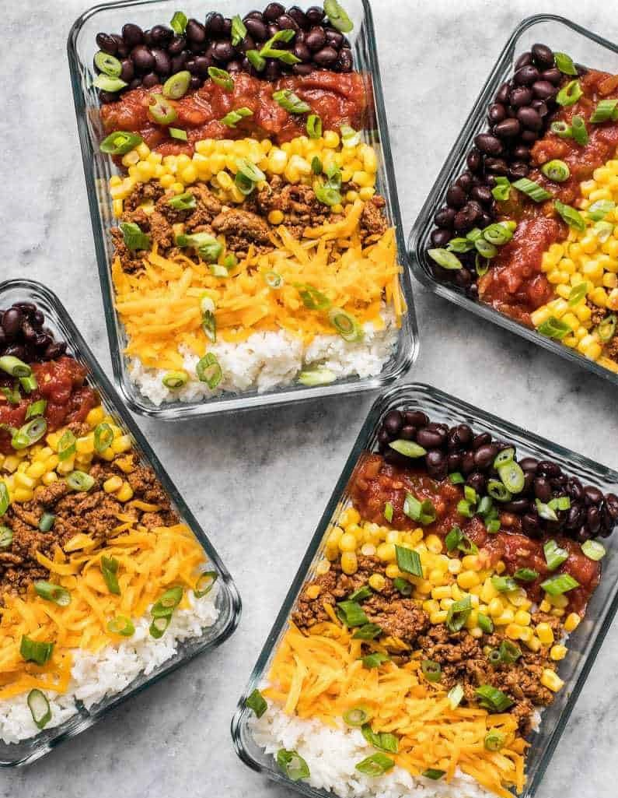

Burrito Bowl

Description
If you're a meal prep pro, you're probably very familiar with burrito bowls.
They're often the first meal the people learn how to meal prep because they're just so easy and versatile.
Despite being kind of a meal prep no-brainer, I've decided to feature them here for all my meal prepping newbies
or those who are still just thinking about venturing into the meal prep world.
This version requires the least amount of work, no ingredients packed alone or on the side,
and nothing to get soggy or limp as the bowls are stored in the fridge.
Ingredients (for 4 Servings)
- 4 cups cooked rice
- 1 lb. ground turkey or beef
- Taco seasoning
- 1 cup frozen corn kernels
- 1 15oz. can of black beans
- 4 oz. cheese (about 1 cup shredded)
- 4/3 cup salsa
- 2 green onions
Steps
-
Cook the rice first. You will be able to prepare all the rest of the ingredients as the rice cooks.
Cook the rice according to the package directions.
To yield about 4 cups white rice, I use 1.5 cups uncooked rice and 2.5 cups water,
but this may vary depending on your rice variety, so be sure to check the package.
-
While the rice is cooking, add the ground turkey or beef to a skillet
and cook over medium heat until it is cooked through.
Depending on the fat content of your meat, you may need to add a little oil to the skillet to keep it from sticking.
-
Once the meat is fully cooked, add the taco seasoning and 1/2 cup water.
Stir and simmer the meat and spices until the water reduces to a saucy consistency (about 5 minutes).
Turn the heat off and set the meat aside.
-
Thaw the corn kernels, rinse and drain the black beans, shred the cheese, and slice the green onions.
-
Once the rice is finished, fluff it with a fork and divide it between four containers.
Divide the remaining six bowl ingredients between the containers as well
(taco meat, corn, beans, cheese, salsa, and green onions).
-
Reheat the bowls for 1-2 minutes before eating to melt the cheese and heat the meat and rice through.